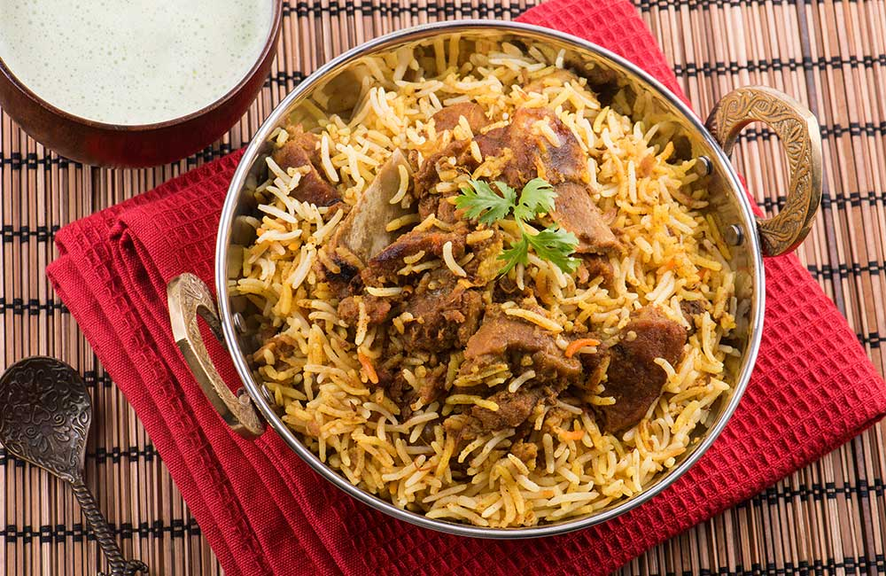

The cuisine of Telangana includes both vegetarian and non-vegetarian dishes. Some of the famous dishes of Telangana are Sarva Pindi, Pachi Pulusu, Golichina Mamsam, Hyderabadi Biryani, Sakinalu, Haleem, and Gongura Chutney. Malidalu, Garijalu, Qubani ka Meetha, Ariselu, and Kobbari Pappu Payasam are some must-try traditional desserts.
Telangana Cuisine is typically spicy and ingredients such as tamarind, sesame seeds, red chillies and asafoetida are widely used in a variety of vegetarian and non-vegetarian dishes. Roselle is a staple item used in making curries and pickles. Sources state that while in Telangana, millet bread/roti is a staple diet its neighbouring state of Andhra prefers rice. Hyderabad is the shared capital of Andhra Pradesh and Telangana and is obviously wildly popular for its biryanis and Karachi biscuits. But there is so much more to Telangana Food that many of us are completely unaware of. So here is a list of some of the Telangana famous food: